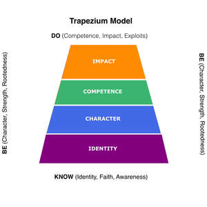
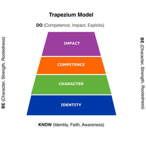

Trade Mark Journal No.2025/047 21 November 2025
UK00004294331 13 November 2025 (16,41)
Mark 1

Mark 2

Mark 3

The mark is a figurative representation of a vertical, four-segmented trapezium structure containing the four textual terms 'IMPACT', 'COMPETENCE', 'CHARACTER', and 'IDENTITY', with the terms arranged from top to bottom respectively. The mark is filed as a Series of Marks with three versions: 1. Monochrome Version: The first version is claimed in monochrome (black and white). 2. Adult Color Version: The second version is claimed in color, where the segments are colored as follows: the top segment ('IMPACT') is Orange (CMYK: C:0 M:46 Y:78 K:5); the second segment ('COMPETENCE') is Green (CMYK: C:69 M:0 Y:51 K:36); the third segment ('CHARACTER') is Blue (CMYK: C:73 M:35 Y:0 K:44); and the bottom segment ('IDENTITY') is Purple (CMYK: C:23 M:48 Y:0 K:40). 3. Teen Color Version: The third version is claimed in color, where the segments are colored as follows: the top segment ('IMPACT') is Purple (CMYK: C:9 M:42 Y:0 K:38); the second segment ('COMPETENCE') is Orange (CMYK: C:0 M:46 Y:78 K:5); the third segment ('CHARACTER') is Green (CMYK: C:46 M:0 Y:56 K:31); and the bottom segment ('IDENTITY') is Blue (CMYK: C:66 M:49 Y:0 K:41).
Registration of this trademark shall give no exclusive right to the exclusive use of the words 'IMPACT', 'COMPETENCE', 'CHARACTER', 'IDENTITY', 'BE', 'KNOW', or 'DO' except as they appear in the mark.
- Class 16
- Printed matter; instructional and teaching materials [except apparatus]; books; booklets; educational charts; diagrams; brand guides [printed matter]; graphic representations.
- Class 41
- Education and training services relating to personal development, character, competence, identity and impact; arranging and conducting of workshops and seminars; coaching [training]; publication of texts, charts, and diagrams, other than publicity texts; providing non-downloadable online publications in the field of personal development.
Pathfinder Educational Limited